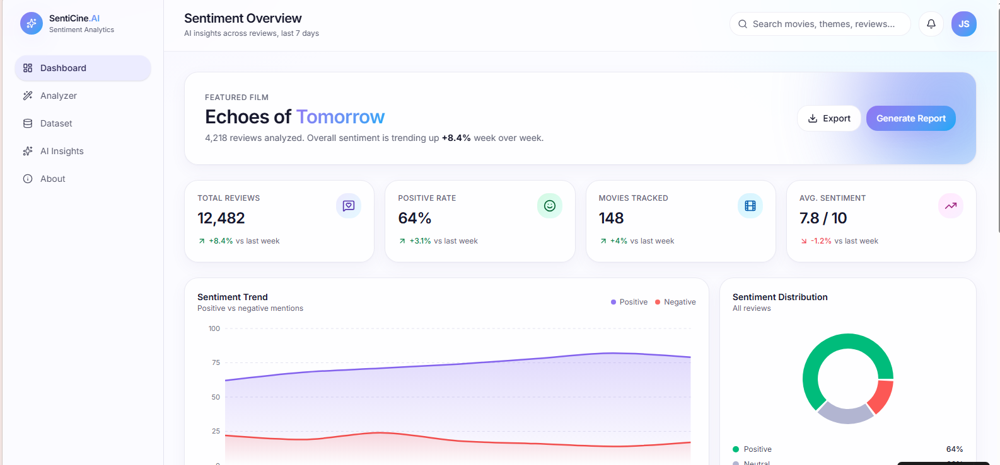
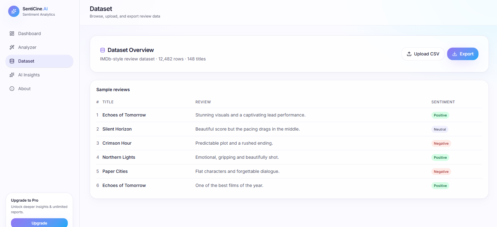
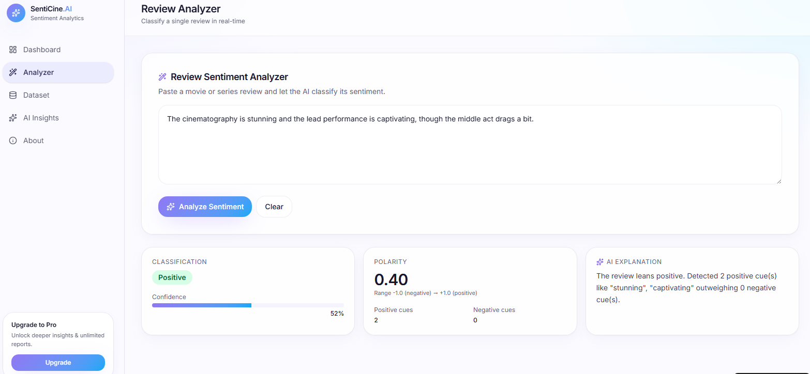

SentiCine.AI - Movie Review Sentiment Analyzer
SentiCine.AI is an AI-powered sentiment analysis dashboard designed to analyze movie and TV series reviews. It transforms audience opinions into visual insights using charts, AI summaries, and sentiment classification.


